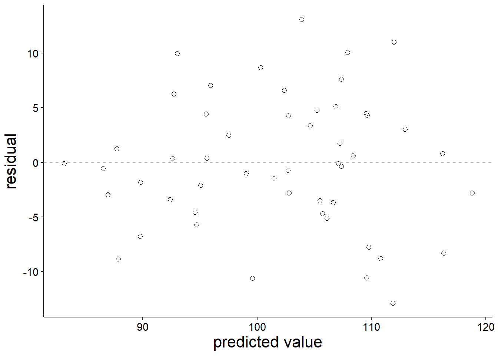
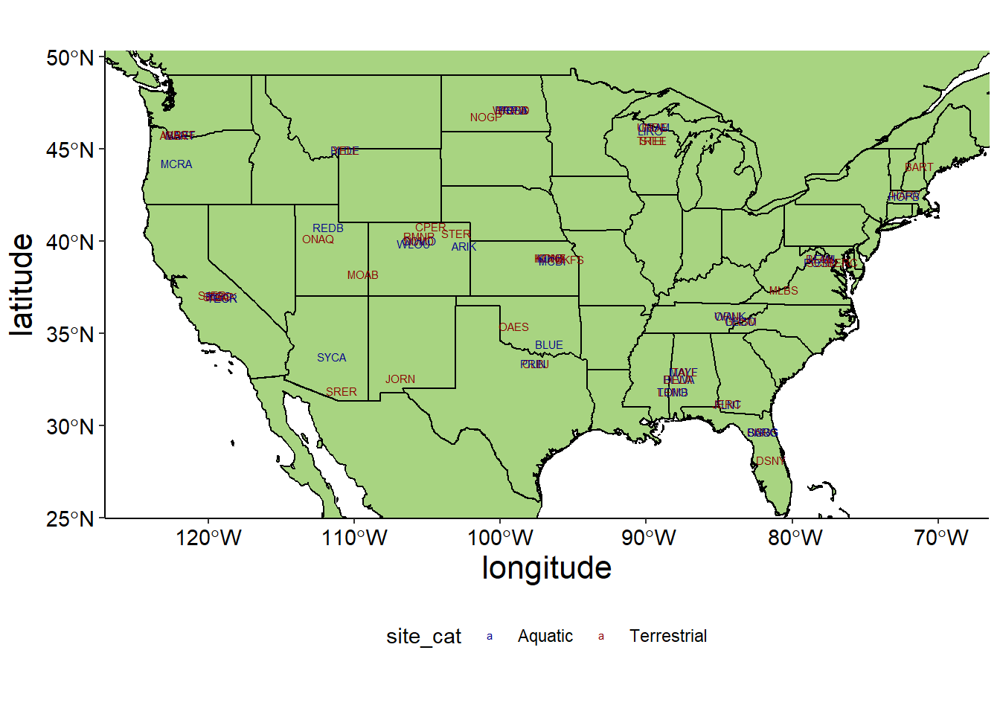

20 Remote Sensing
Learning Objectives
After completing this tutorial you should be able to
- understand the importance of long-term monitoring stations and baseline data
- understand how spatial and temporal patterns affect ecological processes
- describe what raster data sets are and how they encode spatial information
- read spatial raster data in R, making simple maps, and extracting information for non-spatial statistical tests.
- test whether plant growth (greenness & height) is drive more by elevation, slope, or aspect.
- consider large scale patterns of relationships between topography and vegetation
Download the 06_RemoteSensing project folder. Once you have downloaded it, unzip the project directory into your BI449 directory.
Your first step is creating a new R project in your project folder. To do this open Rstudio then use the drop down menu in the top right corner to select New Project and from there New Project in an existing directory. From there, navigate to and select the project folder create an R project. Remember, your Rproj sets the working directory so you need to make sure that it is in your project folder.
Next, open a new Rmd file using File > New File > R Markdown or the drop down menu of the green plus button below File and save it in your Remote Sensing project directory. Use the setup chunk to set your global settings for the document using the options you’ve learned about in the last few projects. Remember, you should always check your html document after it knits to make sure that everything has converted as expected, including your figures, bullet points etc. We are going to need some specific packages for mapping; if you have not already you will need to install the following113 Remember, you only need to do this once, so you should type these functions directly into the console rather than have a code chunk which will try to run every time you knit the document.
Before we start we need to install a few packages if you have not already. We will start with Rcpp - you likely already have this installed but you want to make sure you have the most uptodate version.
install.packages("Rcpp")
install.packages("rgdal")
install.packages("raster")
install.packages("sf")
install.packages("corrplot")
install.packages("rnaturalearthhires",
repos = "http://packages.ropensci.org")
install.packages("ggspatial")If you are on a Mac and it asks you to install from source, say no.
Let’s load our packages so we can get started.
# load libraries
library(plyr)
library(tidyverse)
library(janitor)
library(skimr)
library(glue)
library(knitr)
library(rgdal)
library(raster)
library(ggplot2)
library(viridisLite)
library(corrplot)
library(Hmisc)
library(sf)
library(ggspatial)
library(rnaturalearth)
library(rnaturalearthhires)
library(rnaturalearthdata)
# turn of sci notation
options(scipen=999)20.1 NEON & the power of longterm data sets
► Question 20.1
Watch this short introduction to the National Ecological Observatory Network (NEON) and read this overview of the field stations and domains within the network of monitoring stations.
Briefly outline what NEON is, how it is designed, what data is being measured, what the central goal is, and how the design supports this mission.
Discuss the value of long-term monitoring stations and standardized data gathering.
20.2 Plot maps of topography and plants
The data set we are going to start out with is from a NEON station in the Sierra Nevada mountains in California from a region called Soaproot Saddle.
You already have several *.tif files in your data folder. These are raster data sets with information on NDVI and topology that were sampled for this NEON sites.
► Question 20.2
Briefly describe how a raster data set encodes information.
First we will load Digital Terrain Model data (DTM) which was obtained using LiDAR.
dtm <- raster("data/NEON_D17_SOAP_DP3_298000_4100000_DTM.tif")
class(dtm)## [1] "RasterLayer"
## attr(,"package")
## [1] "raster"► Question 20.3
Briefly describe what data the terrain model raster data set contains.
Next, we will read in the Digital Surface Model LiDAR raster data set.
dsm <- raster("data/NEON_D17_SOAP_DP3_298000_4100000_DSM.tif")► Question 20.4
Briefly describe what data the surface model raster data set contains.
We already have information on elevation, but let’s calculate slope and aspect as additional metrics to describe the topology.
We will use degrees as a measure for slope based on the DTM raster data set.
slope <- terrain(dtm, opt = "slope", unit = "degrees", neighbors = 8)To determine aspect, we will calculate the “northness” as the cosine of aspect, which will read in radians114 Radian is the SI unit for measuring angles; it is a dimensionless value..
# calculate aspect
aspect <- terrain(dtm, opt = "aspect", unit = "radians", neighbors = 8)
# calculate northness
north <- cos(aspect)This means that we can now describe the topography of the monitoring site using elevation, slope, and aspect.
Our overarching question is the extent to which topography impacts vegetation. We will use two variables to describe “levels of vegetation,” first the Normalized difference vegetation index (NDVI) and second vegetation height.
Spectral imaging was used to determine the Normalized Difference vegetation index (NDVI) for our monitoring station.
ndvi <- raster("data/NEON_D17_SOAP_DP3_298000_4100000_NDVI.tif")► Question 20.5
Describe what NDVI measures and how it can be used to assess vegetation.
We can calculate the vegetation height as DSM - DTM.
veg_ht <- dsm - dtmCurrently, we have several individual raster objects, each forming a different layer describing topography and vegetation for the same locations.
We can combine all these individual layers into a raster stack. This is a list, and each element is a different raster layer. Doing this has some advantages, for example, it is straight forward to make a single plot combining these different layers.
# create raster stack
all_data <- stack(dtm, dsm, slope, north, ndvi, veg_ht)
# rename raster layers
names(all_data) <- c("DTM", "DSM", "slope", "north", "NDVI", "Vegetation.Height")Now we can create maps for each of our raster files115 this may take a second to plot … you are processing a bunch of data!. We will use the function plot() instead of our usual ggplot options to keep it simple.
plot(all_data,
col = viridis(255))Let’s consider what correlations we would expect to find based on these six maps.
► Question 20.6
Argue whether overall you think that vegetation patterns are influenced by topography based on these maps and list anything noteworthy you have observed about these maps.
► Question 20.7
Argue which topographic metrics you think should have a strong association with NDVI and describe what you would expect that relationship to look like.
► Question 20.8
Argue which topographic metric you think should have a strong association with vegetation height and describe what you would expect that relationship to look like.
20.3 Explore relationships between topographic variable and vegetation patterns
First, lets convert our raster layers into data frames for easier use. We’ll start by creating an empty data frame with as many rows as there are cells in our raster objects. Then we can use the function extract() the entire extent of the raster layer, i.e. we are pulling out all the information for each pixel and putting it into a set of columns[^3]. The extent argument, tells R to pull out all the information in the raster object116 Recall, each column of a data.frame is a vector.
# create and empty data frame
df <- as.data.frame(matrix(NA, nrow = ncell(dtm), ncol=0))
# extract vegetation height
df$veg_ht <- raster::extract(veg_ht, extent(veg_ht))
# extract ndvi
df$ndvi <- raster::extract(ndvi, extent(ndvi))
# extract dtm
df$dtm <- raster::extract(dtm, extent(dtm))
# extract slope
df$slope <- raster::extract(slope, extent(slope))
# extract aspect
df$north <- raster::extract(north, extent(north))
head(df)## veg_ht ndvi dtm slope north
## 1 7.8100586 0.8477020 1297.25 NaN NaN
## 2 8.9599609 0.8142292 1297.36 NaN NaN
## 3 7.5100098 0.8118778 1297.39 NaN NaN
## 4 0.7000732 0.8314815 1297.35 NaN NaN
## 5 0.8100586 0.7325861 1297.32 NaN NaN
## 6 0.0000000 0.6941839 1297.20 NaN NaNNote, that we no longer have spatial information (coordinates), however, values in the same row do correspond to the same pixel location in our raster object.
► Question 20.9
Note, that some of the slope and north values are NaN - why do you think that is?
Let’s go ahead and remove those values.
df <- df %>%
filter(!is.na(slope)) %>%
filter(!is.na(north))
head(df)## veg_ht ndvi dtm slope north
## 1 6.46008301 0.8252837 1297.20 11.99227 -0.8944847
## 2 6.85998535 0.8504076 1297.03 18.01359 -0.9609535
## 3 0.61999512 0.6705710 1297.00 17.02542 -0.9999917
## 4 0.00000000 0.6165509 1296.93 14.48724 -0.9770750
## 5 0.00000000 0.5876359 1296.89 14.64421 -0.9805627
## 6 0.03991699 0.5609888 1296.90 18.33933 -0.8936710Because we have so much data, we will take a 1% subset of the data to decrease the computational power and time needed.
Because our data set is so large (1 Million rows!), we would expect that a random subset is representative of the relationships as a whole.
dplyr::slice_sample() can be used to specify the proportion of rows that you would like to retain. The function will return a random sub sample.
# set seed for reproducibility
set.seed(42)
# randomly select 1% of rows
df_sub <- df %>%
slice_sample(prop = 0.01)Now, let’s take a look at the relationship between the vegetation and topographic variables.
To do this efficiently using the tidyverse principles and some ggplot magic, need to pivot our data set. Ultimately, we want to have a data set with one column with our topography parameters, one with the topography measurements, one with vegetation variables and one with measurements; then we will be able to use facet_grid() to plot all combinations of variables.
df_plot <- df_sub %>%
pivot_longer(names_to = "topog_param", values_to = "topog_meas", 3:5) %>%
pivot_longer(names_to = "veget_param", values_to = "veget_meas", 1:2)
ggplot(df_plot, aes(x = topog_meas, y = veget_meas)) +
geom_point(alpha = 0.25, size = .75) +
facet_grid(veget_param ~ topog_param, scales = "free") +
labs(x = "Topography", y = "Vegetation") +
theme_facetFigure 20.1: Relationship of topography and vegetation. Topography is described as elevation (dtm, in meters), northness (radians), and slope (degrees); vegetation is assessed using NDVI and vegetation height.

► Question 20.10
Use the scatter plots to make predictions about statistical relationships. Consider whether any of these plots look like they are visualizing strong relationships.
Argue whether you think larger data sets make it easier or harder to identify distinct relationships “by eye.”
Let’s determine whether these variables are correlated using the Pearson correlation coefficients. We can use Hmisc::rcorr to calculate all pairwise correlations and test whether the relationships are significant.
P_corr <- rcorr(as.matrix(df), type="pearson")The output is a list. Recall that we can access individual components of a list using $. In this case P_corr$r contains the correlation coefficients, and P_corr$p contains the p-values.
Visualizing correlations in a correlation plot can be helpful for a quick overview when you are working with a lot of different values, we can do this using the function corrplot().
corrplot(P_corr$r)Figure 20.2: Pairwise relationships of all topographical and vegetation variables measured using Pearson’s correlation coefficient.
Alternatively, you can print the correlation coefficients as a matrix.
P_corr$r## veg_ht ndvi dtm slope north
## veg_ht 1.00000000 0.15271745 -0.10739489 0.054293139 0.049763864
## ndvi 0.15271745 1.00000000 -0.09762246 0.204216049 0.031199918
## dtm -0.10739489 -0.09762246 1.00000000 0.038739447 0.086963361
## slope 0.05429314 0.20421605 0.03873945 1.000000000 -0.005534425
## north 0.04976386 0.03119992 0.08696336 -0.005534425 1.000000000► Question 20.11
Describe whether or not these relationships conform to your predictions when you looked at the maps and when you looked at the scatter plots and discuss what could be causing differences from your expectations.
We can also print our p-values:
P_corr$P## veg_ht ndvi dtm slope north
## veg_ht NA 0 0 0.00000000000000 0.00000000000000
## ndvi 0 NA 0 0.00000000000000 0.00000000000000
## dtm 0 0 NA 0.00000000000000 0.00000000000000
## slope 0 0 0 NA 0.00000003325176
## north 0 0 0 0.00000003325176 NA► Question 20.12
Assess whether or not all of your relationships are statistically significant. Discuss the importance of p-values for large data sets.
Let’s coerce our correlation coefficients into something a bit more tidy, we’ll also add the abbreviation for the site we’ve been looking at.
tidy_cor <- as.data.frame(P_corr$r) %>%
rownames_to_column("Param1") %>%
pivot_longer(names_to = "Param2", values_to = "pearson", 2:6) %>%
filter(Param1 %in% c("veg_ht", "ndvi")) %>%
filter(!Param2 %in% c("veg_ht", "ndvi")) %>%
mutate(Site = "SOAP")Let’s write that data frame out as a text file in our results folder.
write_delim(tidy_cor, "results/SOAP_correlation.txt", delim = "\t")20.4 Comparison of relationship of vegetation and topography across the US
Let’s take a look at the different NEON sites across the US and choose locations from the contiguous 48.
We are going to come up with a sampling design to compare impact of topography on vegetation across domains and regions. We can access the elevetion and NDVI data sets from the Data Portal.
► Question 20.13
List the sites that were chosen and describe the sampling design behind using this specific set of locations.
► Question 20.14
Briefly describe what patterns you expect to see, consider e.g. whether you think that you will observe the same relationship across all locations. Look up the sites you have chosen to make informed predictions.
► Question 20.15
For your assigned sites go through the following process:
- read in the DTM, DSM, and NDVI
*tiffiles asrasterobjects you downloaded from the data portal - Calculate vegetation height, slope, and northness and create a raster stack to plot the six panel plot.
- Based on your plots predict which relationship you think will have a stronger association with vegetation height, determine if vegetation patterns overall appear to be influenced by topography, and note any other observations for this set of maps on their own and in relation to the California set.
- convert your raster table to a data.frame and take a 1% subset.
- plot the correlations between vegetation and topographic variables.
- calculate the correlations.
- convert your results into a tidy data set and add the location abbreviation.
- write your results into a text file.
- Briefly summarize your key results (what are the most significant relationships at the site you explored? Which don’t seem to be important)
Share your correlation results (text file) in the #hwassignments channel on slack.
We will compile all of the results into a map, so you can see how the impact of topographic variables varies across our studies locations.
First, let’s read in a text file that has all the NEON sites and information on their geographic location. We are only interested in sites from the contiguous 48 so we will remove locations in Alaska, Hawaii, and Puerto Rico.
sites <- read_delim("data/neon_sites.txt", delim = "\t") %>%
clean_names() %>%
separate(site_type, into = c("tmp", "site_cat"), sep = " ", remove = FALSE) %>%
dplyr::select(-tmp) %>%
filter(!state %in% c("AK", "HI", "PR"))
head(sites)## # A tibble: 6 x 9
## site_name site_id domain_number state latitude longitude site_type site_cat site_subtype
## <chr> <chr> <chr> <chr> <dbl> <dbl> <chr> <chr> <chr>
## 1 Abby Road ABBY D16 WA 45.8 -122. Relocatable Te~ Terrestr~ <NA>
## 2 Arikaree River ARIK D10 CO 39.8 -102. Core Aquatic Aquatic Wadeable Str~
## 3 Ordway-Swisher Biologic~ BARC D03 FL 29.7 -82.0 Core Aquatic Aquatic Lake
## 4 Bartlett Experimental F~ BART D01 NH 44.1 -71.3 Relocatable Te~ Terrestr~ <NA>
## 5 Upper Big Creek BIGC D17 CA 37.1 -119. Relocatable Aq~ Aquatic Wadeable Str~
## 6 Blandy Experimental Farm BLAN D02 VA 39.1 -78.1 Relocatable Te~ Terrestr~ <NA>Let’s start simple by creating a map that has all of our NEON sites on it.
First, we need to get a shapefile that we will use as our basemap - because we are going to want to orient ourselves within the US, we will also pull information we can use to plot state lines.
world <- ne_countries(scale = "medium", returnclass = "sf")
us_states <- ne_states(country = "United States of America", returnclass = "sf")We are not going to want to plot the entire world, so let’s identify the lat/longs for the four corners of the box we want to plot but pulling information on the minimum and maximum latitude & longitude of our NEON sites and then adding a small buffer around it.
Then we can plot our map.
# lat/long for map extend
x_min <- min(sites$longitude) - 2
x_max <- max(sites$longitude) + 2
y_min <- min(sites$latitude) - 2
y_max <- max(sites$latitude) + 2
# set font sizes for text labels
site_size <- 2
# set color for fill
map_color <- "#a8d481"
# create plot
ggplot() +
geom_sf(data = world, color = "black", fill = map_color) + # plot outline of countries
geom_sf(data = us_states, color = "black", fill = NA) + # plot outline of states
coord_sf(xlim = c(x_min, x_max),
ylim = c(y_min, y_max)) + # plot boundaries for map
geom_text(data = sites, aes(x = longitude, y = latitude, # add sites as labels
label = site_id, color = site_cat),
size = site_size) +
scale_color_manual(values = c("darkblue", "darkred"))Figure 20.3: NEON sites in contiguous US
NEON sites are intentionally designed so aquatic and terrestrial sites are ideally right next to each other, so those are plotting right on top of each other.
Instead of the site id’s we could also make the same map with points for locations.
# create plot
ggplot() +
geom_sf(data = world, color = "black", fill = map_color) + # plot outline of countries
geom_sf(data = us_states, color = "black", fill = NA) + # plot outline of states
coord_sf(xlim = c(x_min, x_max),
ylim = c(y_min, y_max)) + # plot boundaries for map
geom_point(data = sites, aes(x = longitude, y = latitude, # add sites as labels
fill = site_cat),
shape = 21, size = 2, alpha = 0.5) +
scale_fill_manual(values = c("darkblue", "darkred"))Figure 20.4: NEON site locations
If we want to compare differences in the relationships of topographic variables across all the sites we plotted, we could use the same method to plot the correlation coefficients, in addition to the site labels; all we need to do is add the correlation coefficients into our sites data.frame117 Once we have information for multiple sites, you will need to either read in all the text files with results and use bind_rows to create a single data.frame, or we will also allow for some outside R action, where you just cut and paste them all into a single text file and read that in..
Here is how you can read in all your files and combine them into a single data.frame. We will create an empty list and then fill it with individual data.frames (one for each site) by looping over a vectory with all the filenames. Because we names our correlations files in a very standardized way, we can specify a pattern, and R will create a vector with all those filenames in the results folder for us.
# path to results
path <- "results"
# pattern for filenames
pattern <- "correlation"
# list with all txt files in data directory
list.filenames <- list.files(path = path,
pattern = pattern)
# empty list to load files into
list.data <- list()
# loop to read in data files
for (i in list.filenames){
file <- as.character(glue("{path}/{i}"))
list.data[[i]] <- read_delim(file, delim = "\t")
}
correl_all <- ldply(list.data, data.frame) %>%
dplyr::select(-`.id`)
# # write to file
# write_delim(correl_all, "results/Comp_pearson.txt", delim = "\t")For example, we could create a map for slope and NDVI like this:
# add correlation coefficients
sites_pears <- sites %>%
left_join(correl_all, by = c("site_id" = "Site")) %>%
filter(!is.na(pearson)) %>% # retain only sites with pearson coefficient estimated
filter(Param1 == "ndvi" & Param2 == "slope") # choose veg & topog relationship to map
# set font sizes for text labels
site_size <- 4
cor_size <- 5
# create plot
ggplot() +
geom_sf(data = world, color = "black", fill = map_color) + # plot outline of countries
geom_sf(data = us_states, color = "black", fill = NA) + # plot outline of states
coord_sf(xlim = c(x_min, x_max),
ylim = c(y_min, y_max)) + # plot boundaries for map
geom_text(data = sites_pears, aes(x = longitude, y = latitude, # add sites as labels
label = site_id),
size = site_size, color = "black") +
geom_text(data = sites_pears, aes(x = longitude, y = latitude, # add pearson coefficient as labels
label = round(pearson, digits = 2)),
size = cor_size, color = "darkred", nudge_y = -1.5) + # shift label below actual coordinates
theme(legend.position = "none")Figure 20.5: Pearson correlation coefficient for slope and NDVI for all assessed sites
► Question 20.16
Choose either NDVI or vegetation height and make a map showing the correlation coefficients for all sites that were compared for elevation, slope, and northness. Make sure your maps have titles, and that all the site names and correlation coefficients are legible in your map. Use fig.height and fig.width to adjust the size of your figures in your html document that you submit.
Compare the overall patterns of correlation across the United States and discuss your results - speculate on how these topographic parameters could be playing a role in differences in vegetation in different eco-domains across the United States.
20.5 Acknowledgments
These activities are based on the EDDIE Remote Sensing module.118 Dahlin, K. M. (2021). Remote Sensing of Plants and Topography in R (Project EDDIE).
Page built: 2021-11-15 using R version 4.0.2 (2020-06-22)